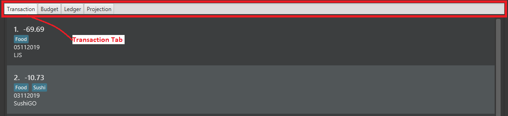
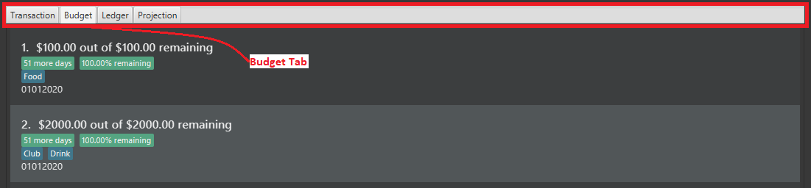

Overview
This portfolio documents my contributions to PalPay, a software engineering project under the module, CS2103T Software Engineering. For this module, we were provided with a working software application which we could enhance or morph to suit our target audience.
PalPay is a student application that effectively tackles the problem of the lack of a centralised platform to manage their finances. Hence, PalPay provides the ability to easily track their expenses and manage their finances.
For the project, my main role was to develop the undo and redo feature for the application. Additionally, I was tasked to develop the view, sort and filter features.
Summary of contributions
-
Code contributed: RepoSense
-
Major enhancement: Implemented the ability to undo and redo previous commands.
-
What it does: Undo command allows the user to undo all previous commands one at a time. Redo command reverses preceding undo command.
-
Justification: It gives users the ability to easily rectify their mistakes in commands. Hence, it improves the user experience and a more convenient way of self-correction.
-
Highlights: This requires a thorough understanding of the starting infrastructure of the application in other to make changes to it. This enhancement affects existing commands and commands to be added in future. In addition, I need to ensure the commands are undoable and redoable, and that there are no conflicts to the existing data in the application.
-
Credit: Took some inspiration from Address Book 4 to aid in the development.
-
-
Minor enhancement:
-
View command for users to switch tabs without the need of a mouse to click another tab. This meets the needs of the target audiences who prefer using the command line.
-
Sort command for users to sort their lists of transactions in PalPay.
-
Filter command for users to filter their lists of transactions to reduce the need of scrolling through their lists.
-
-
Other contributions:
-
Project management:
-
Managed the biweekly project releases on GitHub.
-
Managed the issue tracker of the group repository.
-
Reviewed and merged pull requests.
-
-
Enhancements to existing features:
-
Documentation:
-
Reformatted the User Guide for a more sequential flow.
-
Wrote the details for the following commands in the User Guide.
-
View / Sort / Filter / Undo / Redo / Clear / List / Help / Exit
-
-
Wrote user stories in the Developer Guide.
-
Wrote the instructions for manual testing in the Developer Guide.
-
Created UML diagrams to help in the explanation of view, sort and filter commands in the Developer Guide.
-
-
Community:
-
Tools:
-
Managed the initial set up of the group repository on GitHub.
-
Integrated Travis CI, Coveralls, Netlify and RepoSense into the group repository.
-
-
Contributions to the User Guide
Given below are sections I contributed to the User Guide. They showcase my ability to write documentation targeting end-users. |
Switching Tabs : view
Want to switch tabs without using your mouse? You can switch to another tab with the view command.
Command Syntax
Format: view TAB
Example Usage
You do not have to use your mouse in PalPay to switch tabs anymore.
-
By default, you are in the
transactiontab.Figure 1. Transaction Tab -
Simply type view budget in the command box and press Enter.
 Figure 2. User Input
Figure 2. User Input -
You can now view your budgets. Easy!
Figure 3. Budget Tab
Undoing the Last Command : undo
Did you accidentally delete a transaction? Do not panic! PalPay lets you undo your previous commands with just one
word, undo.
Command Syntax
Format: undo
Example Usage
Suppose you want to update your allowance you received in October 2019 to $800 but you accidentally update the GrabTaxi
ride instead. Without going through the trouble of updating the same transaction again, you can simply perform the
undo command. Just follow these three simple steps.
-
Here, you can see the wrong update you just made.
 Figure 4. Transaction List Containing Erroneous Transaction
Figure 4. Transaction List Containing Erroneous Transaction -
Simply type undo in the command box and press Enter.
 Figure 5. User Input for Undo Command
Figure 5. User Input for Undo Command -
As you wish, your command has been undone.
 Figure 6. Erroneous Transaction Has Been Undone
Figure 6. Erroneous Transaction Has Been Undone
Contributions to the Developer Guide
Given below are sections I contributed to the Developer Guide. They showcase my ability to write technical documentation and the technical depth of my contributions to the project. |
Sort Feature: sort
This feature allows the user to sort their transactions by amount or date, in ascending and descending order.
Current Implementation
The sort command is facilitated by the Logic and Model components of the application.
The following sequence diagram shows how the sorting of transactions work when the user enters sort date/d.

sort date/dExample of Usage
Given below is an example usage of how sort behaves at each step.
Step 1. The user launches the application and views an unsorted list of transactions.

Step 2. The user now executes sort date/d to sort the transactions in the order of descending date.
sort date/dStep 3. Upon executing the command, LogicManager uses MainParser#parse() to parse the input from the user.
Step 4. MainParser determines which command is being used and creates SortCommandParser to further parse the input
from the user.
Step 5. SortCommandParser parses the argument and checks if it is valid. If it is
invalid, SortCommandParser throws an exception and terminates. Else, it returns a SortCommand.
Step 6. LogicManager uses SortCommand#execute() to sort the transactions in the order of descending date.
Step 7. SortCommand uses ModelManager#getBankAccount() to get the current bank account and uses
BankAccount#getTransactionHistory() to get the list of transactions of the user.
Step 8. SortCommand uses SortCommand#sortTransactionHistory() to sort the transactions.
Step 9. SortCommand uses Model#set() to store the sorted transactions and Model#commitUserState() to
save the latest state of the application.
Step 10. SortCommand returns a CommandResult to the LogicManager and the result will be displayed to the user
at the end.

Design Considerations
Aspect: Sorting of the Bank Account
-
Alternative 1 (Current Choice): Creating a comparator for each area to be sorted.
-
Pros: Easy to implement.
-
Cons: Users can only sort by comparators that have been implemented. Developers have to create a new comparator class to sort a new area.
-
-
Alternative 2: Users can define the area to be sorted.
-
Pros: Extremely flexible for the users as they are not limited to the number of areas to be sorted.
-
Cons: Difficult to implement.
-
Undo / Redo Command Feature: undo/redo
Current Implementation
The undo/redo mechanism is facilitated by VersionedUserState.
It extends UserState with an undo/redo history, stored internally as an userStateList and currentStatePointer.
Additionally, it implements the following operations:
-
VersionedUserState#commit()— Saves the current user state in its history. -
VersionedUserState#undo()— Restores the previous user state from its history. -
VersionedUserState#redo()— Restores a previously undone user state from its history.
These operations are exposed in the Model interface as Model#commitUserState(), Model#undoUserState()
and Model#redoUserState() respectively.
Given below is an example usage scenario and how the undo/redo mechanism behaves at each step.
Step 1. The user launches the application for the first time.
The VersionedUserState will be initialized with the initial user state, and the currentStatePointer
pointing to that single user state.

Step 2. The user executes delete t5 command to delete the 5th transaction in the transaction list.
The delete command calls Model#commitUserState(), causing the modified state of the user state after the
delete t5 command executes to be saved in the userStateList, and the currentStatePointer is shifted
to the newly inserted user state.

delete t1 CommandStep 3. The user executes in $/10 n/Allowance d/07112019 to log a new transaction.
The in command also calls Model#commitUserState(), causing another modified user state to be saved
into the userStateList.

in $/10 n/Allowance d/07112019 Command
If a command fails its execution, it will not call Model#commitUserState(), so the user state will
not be saved into the userStateList.
|
Step 4. The user now decides that logging the transaction was a mistake, and decides to undo that action by
executing the undo command. The undo command will call Model#undoUserState(), which will shift the
currentStatePointer once to the left, pointing it to the previous user state, and restores the user state
to that state.

undo Command
If the currentStatePointer is at index 0, pointing to the initial user state, then there are no previous
user states to restore. The undo command uses Model#canUndoUserState() to check if this is the case.
If so, it will return an error to the user rather than attempting to perform the undo.
|
Step 5. The user then decides to execute the command list.
Commands that do not modify the user state, such as list, will usually not call Model#commitUserState(),
Model#undoUserState() or Model#redoUserState(). Thus, the userStateList remains unchanged.

list CommandStep 6. The user executes clear, which calls Model#commitUserState().
Since the currentStatePointer is not pointing at the end of the userStateList, all user states after
the currentStatePointer will be purged. We designed it this way because it no longer makes sense to redo the
in $/10 n/Allowance d/07112019 command. This is the behavior that most modern desktop applications follow.

clear CommandThe following sequence diagram shows how the undo operation works:
The lifeline for UndoCommand should end at the destroy marker (X) but due to a limitation of PlantUML,
the lifeline reaches the end of diagram.
|
The redo command does the opposite — it calls Model#redoUserState(), which shifts the currentStatePointer
once to the right, pointing to the previously undone state, and restores the user state to that state.
If the currentStatePointer is at index userStateList.size() - 1, pointing to the latest user state, then
there are no undone user states to restore. The redo command uses Model#canRedoUserState() to
check if this is the case. If so, it will return an error to the user rather than attempting to perform the redo.
|
Aspect: How Undo and Redo Executes
-
Alternative 1 (current choice): Saves the entire user state.
-
Pros: Easy to implement.
-
Cons: May have performance issues in terms of memory usage.
-
-
Alternative 2: Individual command knows how to undo/redo by itself.
-
Pros: Will use less memory (e.g. for
delete t1, just save the transaction being deleted). -
Cons: We must ensure that the implementation of each individual command are correct.
-
Aspect: Which Data Structure to Support the Undo/Redo Commands
-
Alternative 1 (current choice): Use a list and a pointer to store the history of user states.
-
Pros: Easy for new Computer Science student undergraduates to understand, who are likely to be the new incoming developers of our project.
-
Cons: Need to manage the list and pointer carefully as the pointer has to point to the correct position in the list at all times. For example, when a new command is executed, we must remember to update both
userStateListandcurrentStatePointer.
-
-
Alternative 2: Use two stacks. One stack stores the commands to undo and the other stores the commands to redo.
-
Pros: Do not need to manage a pointer for the stacks.
-
Cons: Need to manage both stacks carefully. For instance, when a command is popped from the undo stack, it needs to be pushed into the redo stack.
-